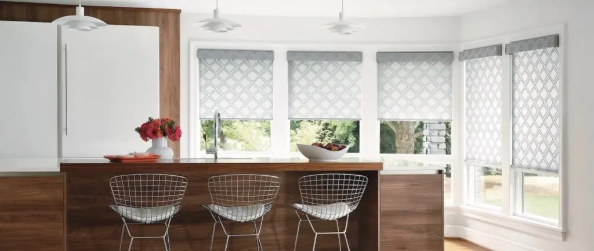
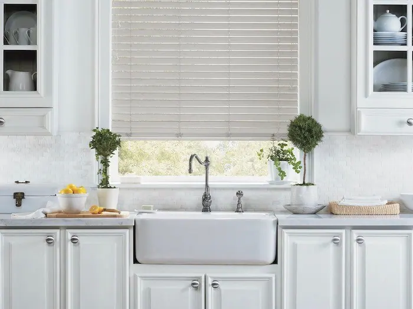
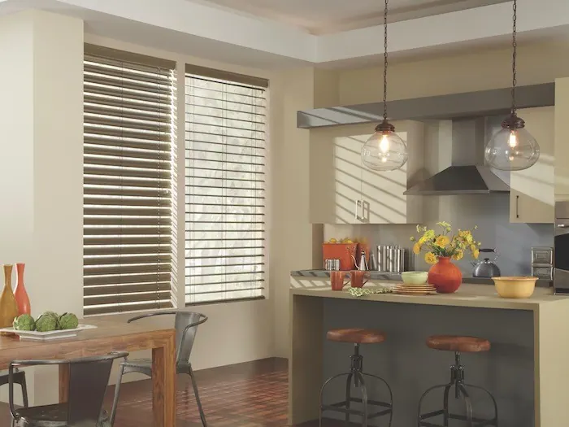
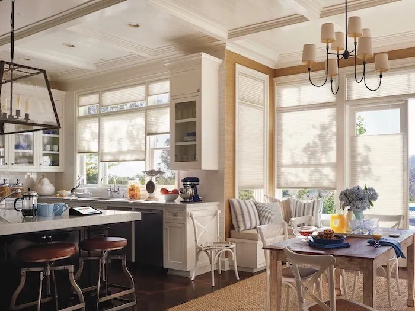
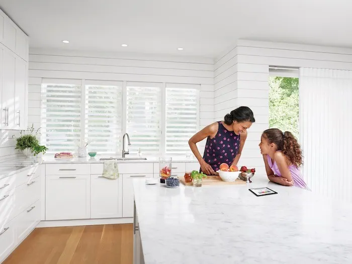
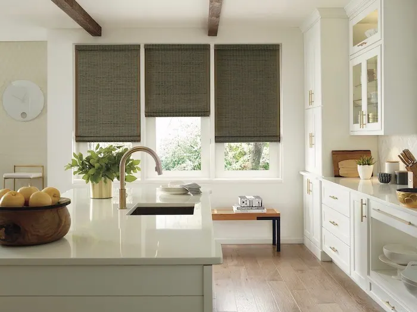
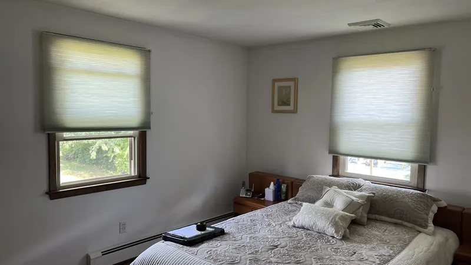
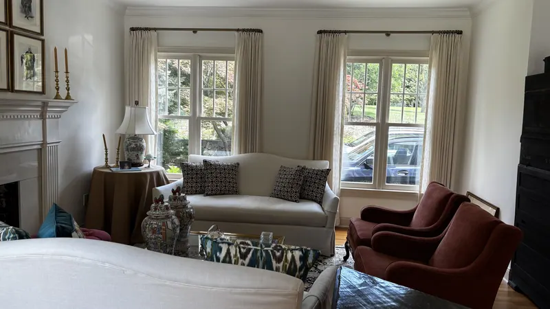
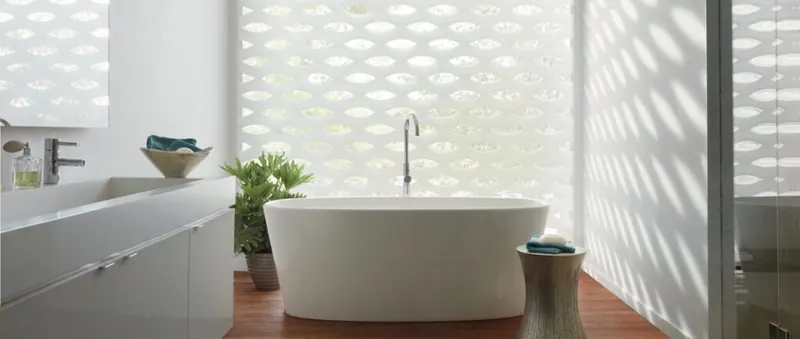
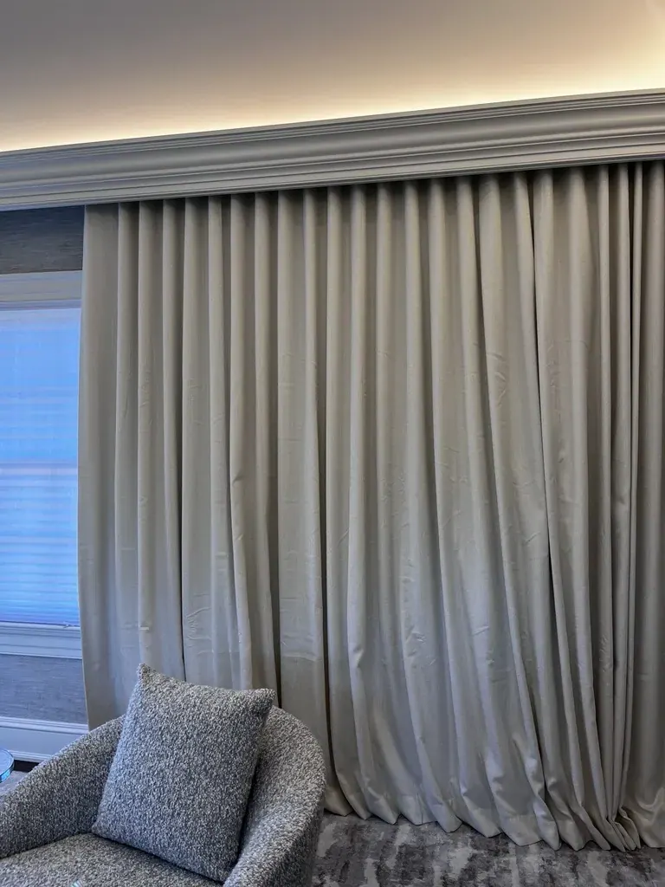

Blinds and shades by room
Kitchen window treatments
When selecting window treatments for a kitchen, consider the following:
Consider your needs
When selecting window treatments for a kitchen, consider the following:
- Is your window near a stove or sink? If yes, selecting heat and moisture resistant window coverings is a good idea.
- What are your needs for privacy, can your neighbors see in? If yes, consider shades that provide privacy but also let in natural light.
- What are your needs for temperature control? Does your kitchen get really warm or cold at certain times of the year? If yes, consider energy efficient cellular shades or shutters.
The best kitchen window coverings combine just the right amount of function and style.

Heat and moisture resistant blinds and shutters
If you cook frequently and your stove is near a window, it's best to select a window treatment that can stand up to heat and humidity and is easy to clean, such as:
- Modern Precious Metals® Aluminum Blinds
- EverWood® Alternative Wood Blinds
- Palm Beach™ Polysatin™ Shutters
These window treatments are made from materials that won't warp, crack, fade, chip, peel or discolor – regardless of extreme heat or moisture. This also makes them a great choice for windows near a sink.

Insulating honeycomb shades
If your kitchen gets really warm or cold at certain times of the year, consider Duette® Honeycomb Shades. Their unique honeycomb construction adds a layer of insulation, preventing energy loss at the window.
Duette shades come with Top-Down / Bottom-Up functionality, which means they can be opened from the bottom or from the top, allowing you to create the perfect balance of privacy and natural light.

Simplify your life with automation
Many of our Hunter Douglas window treatments are available with PowerView® Automation. Using the intuitive PowerView App, you can automate your window treatments to move to the exact position you want throughout the day.
You can also operate your PowerView settings using the PowerView Pebble® Control or with voice commands.

Options for every style
Another consideration, of course, is your kitchen's style. From modern shades to classic shutters, we have window treatments to complement any décor.

Questions we hear often
Can you help me choose the right window treatment?
Yes. Whether you are shopping for a single window treatment, redecorating your entire house or solving a complex design challenge, we visit your home, look at every window with you and recommend options that fit how you use each room.
Do you measure and install window treatments?
Yes. We take care of measuring and installation. Our experienced installers are fully trained and will ensure a perfect fit for your new window treatments, and they show you how everything works before they leave.
More blinds and shades by room

Bedroom
When selecting window treatments for a bedroom, consider the following:
Explore Bedroom
Living room
For many of us, the centerpiece of our living room is the beautiful view, but with that view often comes an abundance of sun and harsh light.
Explore Living room
Bathroom
When selecting window treatments for a bathroom, consider the following:
Explore Bathroom

Let’s look at your windows together.
A free visit, real samples, and an honest recommendation. No pressure to buy on the spot.